Pressure assembly
One shared visual language for the baked boilers, central pressure tanks and service pipes.
Verified: 395 .NET · 415 EditMode · 151 PlayMode · Android build passed. APK installed and hash-matched on S23; selected guarded device checks completed.
Shared baked pressure vessels, continuous rolled-metal pipe grain and formed service sleeves. Existing centres, sockets and foundations are retained. Broad details expose the integration; portraits show its scale in the playable scene.
| Whole runtime region | Before | After |
|---|---|---|
| Mesh renderers | 21 | 24 |
| Vertices | 99,492 | 99,444 |
Reservoir import independently verified: 512 square · ASTC 6x6 · 10 mip levels · non-readable, from a 1024-square source. The inherited budget file's 1024/11-mip texture line describes the short boiler, not this reservoir.
North pressure assembly

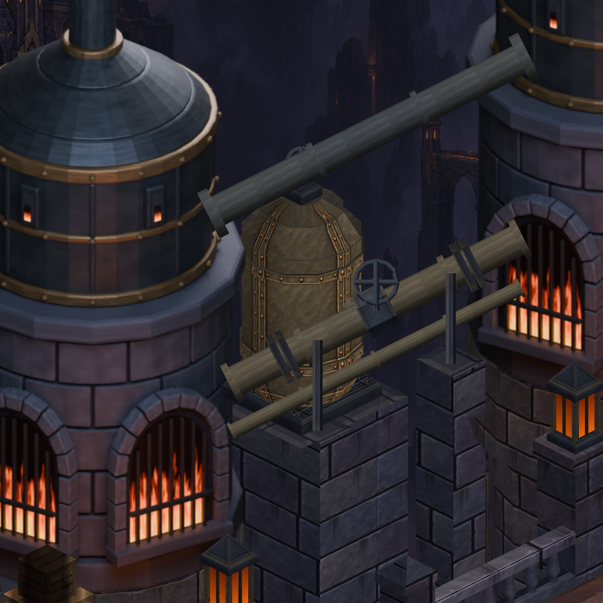

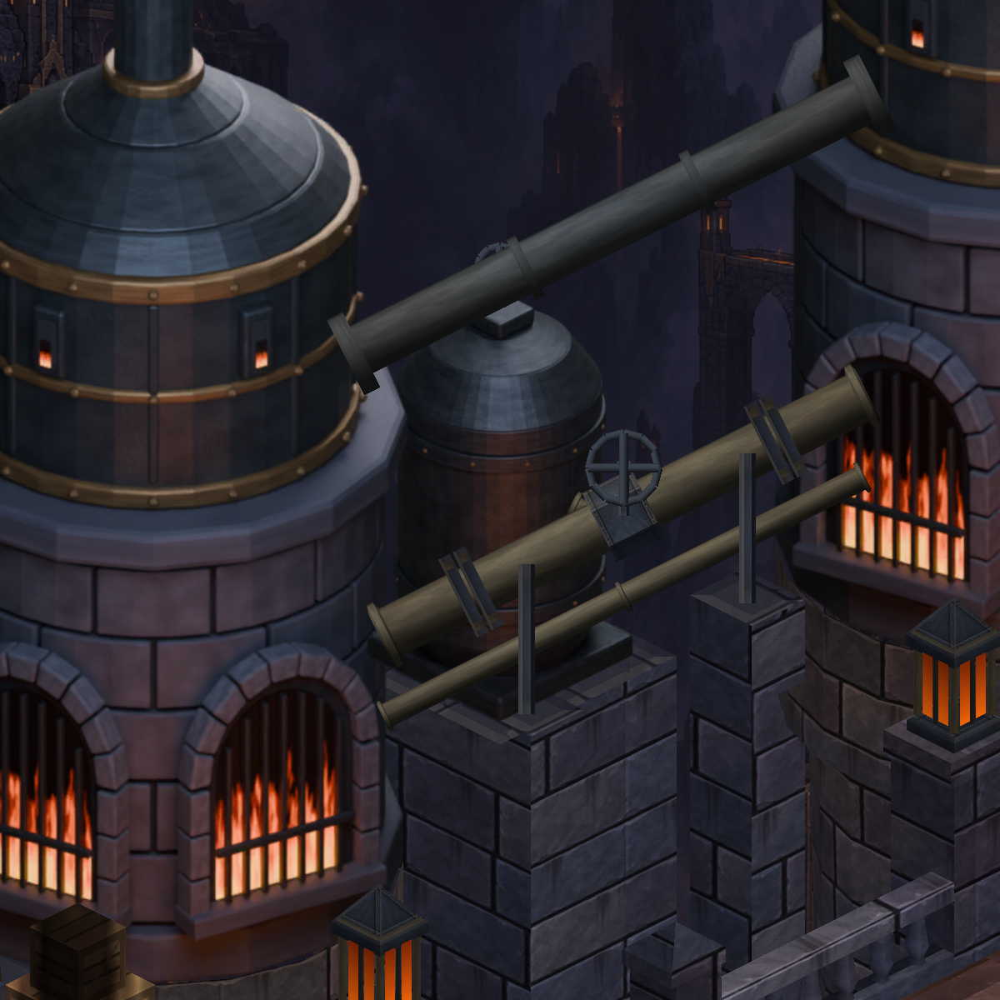
Foreground pressure assembly

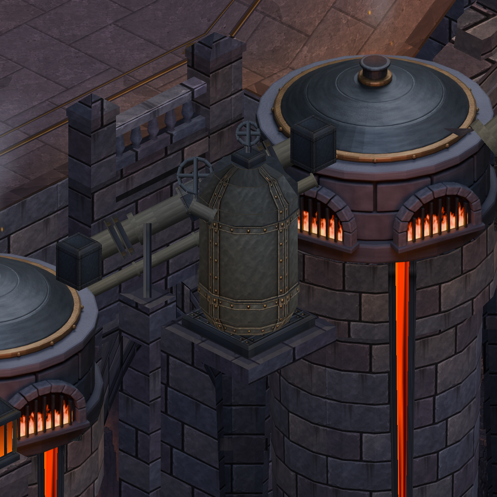

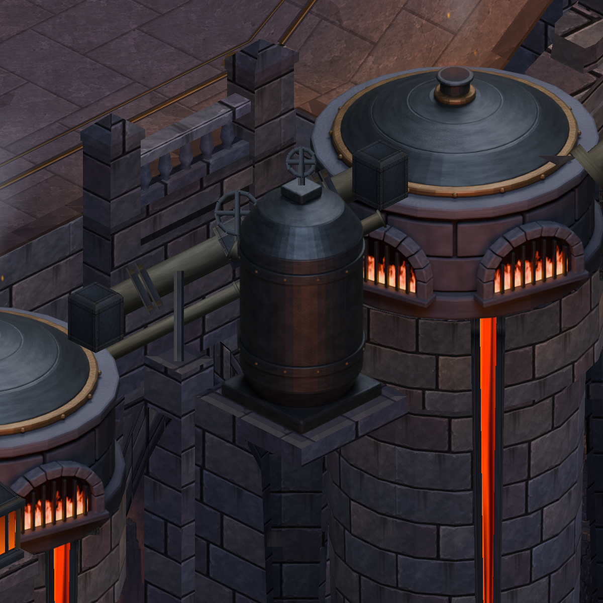
Full-region overview

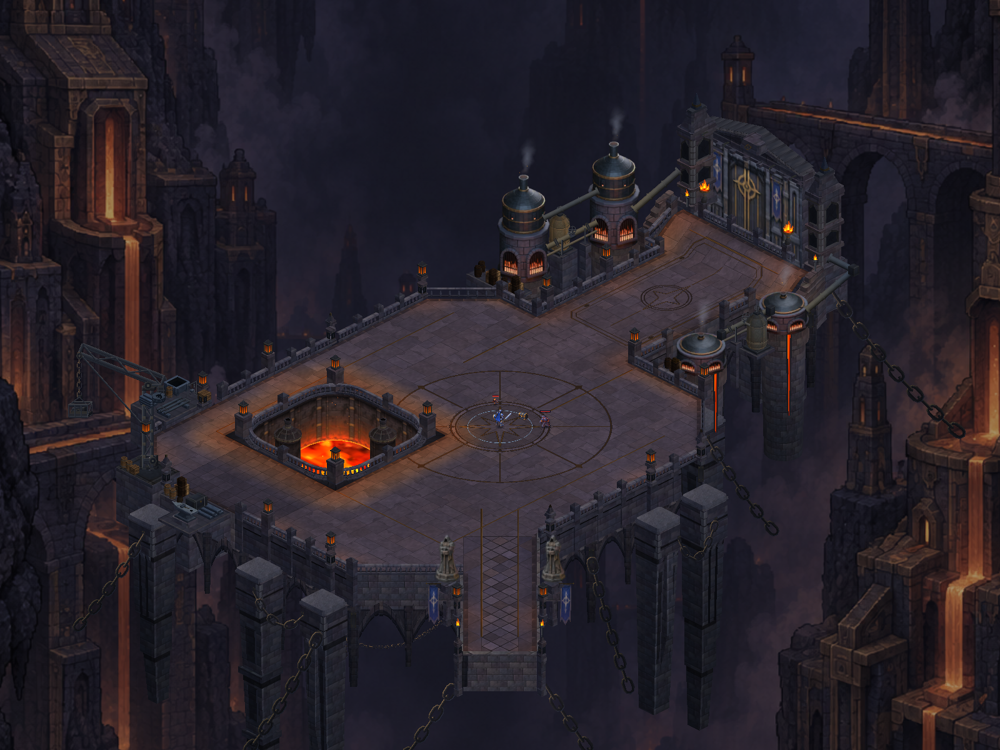

Production portrait · design (16, 1)

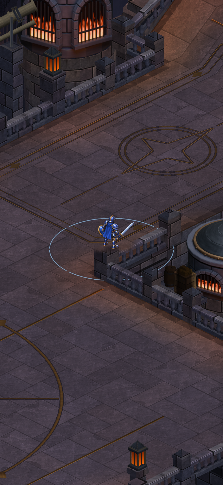

Production portrait · design (20, 1)

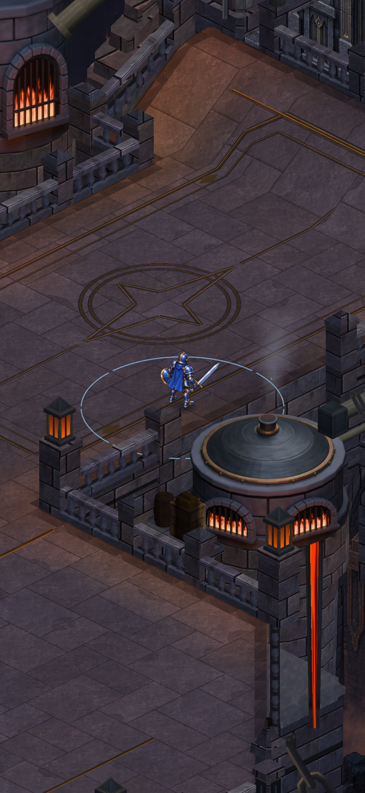

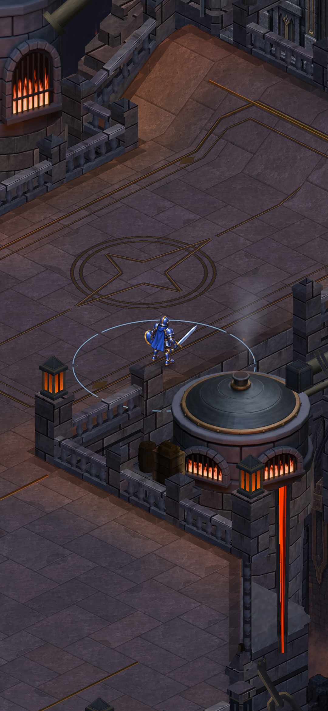
Production portrait · design (24, 1)

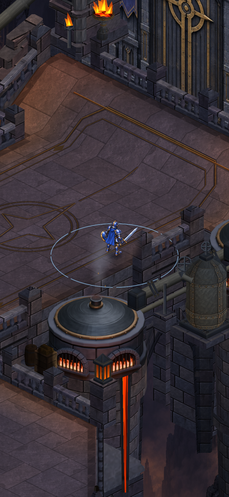

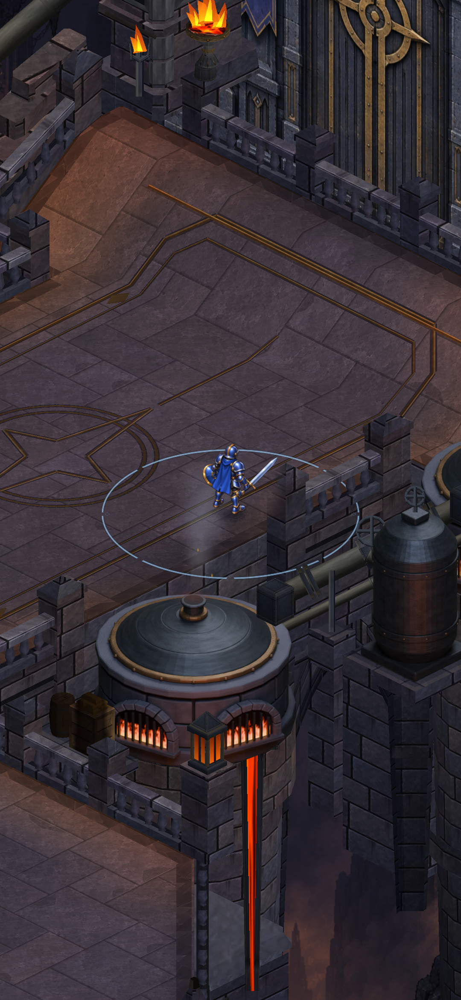
Production portrait · design (28, 1)

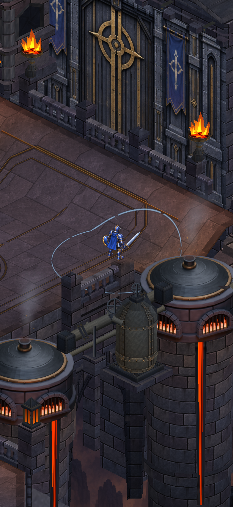

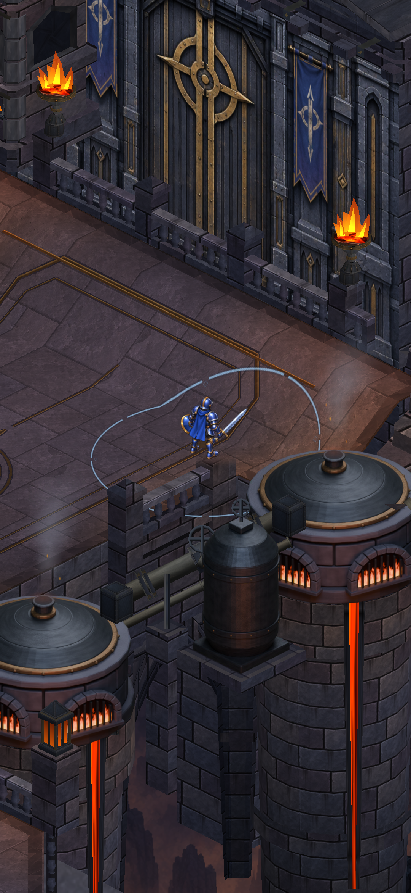
Installed S23 build · selected device checks
The near pressure vessel and pipe connection, east gate approach and pit wall were reviewed with guarded real movement. HUD crops the gate header and distant upper equipment; complete gate-header improvement and the far tank's entire top are not claimed visible here.

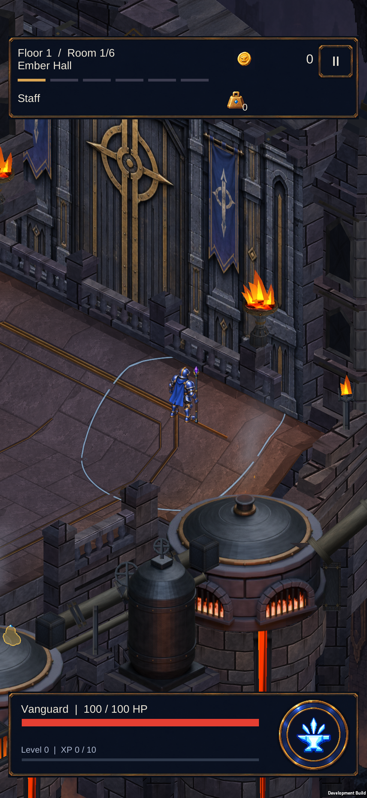

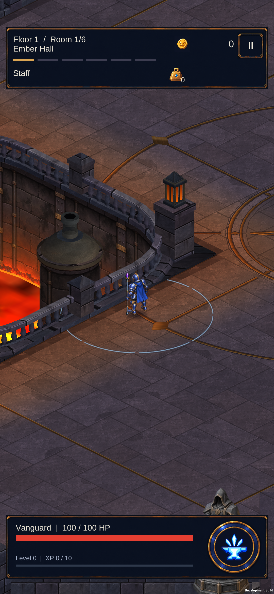

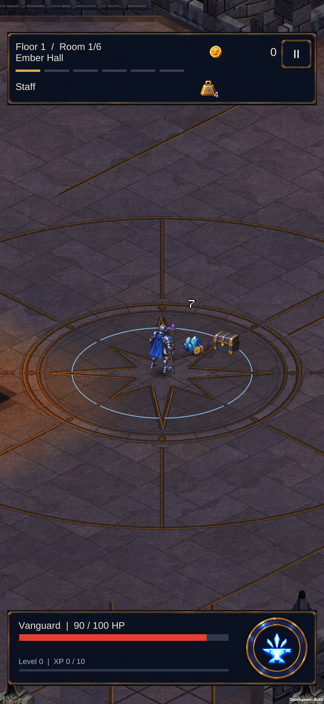
Installed APK: 31,209,737 bytes; SHA-256 871C3772368CFBC082F537CC39DBC9862C449BAD686BAFB8CAEB425892C9E4F7. Installation hash matched. Integrity: 561 asset/folder GUIDs, 1,099 package GUIDs, 568 scene objects/components. Profile, backup and three original development flags remained hash-identical after the normal test; no save restoration.
Short first-pass late quiet windows: 59.9 fps, maximum 17 ms, GPU averages 4.2–4.3 ms; its initial window separately contained 229 ms. This does not establish matched old/new, sustained crowd or midrange performance. Earlier first-ramp hitch remains open.
East route log · Pit route log · Normal run log · APK hash · Keeper-seat gallery (targeted bridge device review completed).